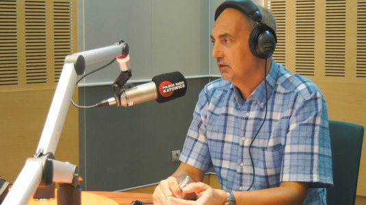

Aktualności
17.07.2018
II etap Tour de Pologne w regionie. Fatalna pomyłka po starcie.
Excepteur sint occaecat cupidatat non proident, sunt in culpa qui officia.
15.07.2018
Trwa budowa drogi Pszczyna – Racibórz.
Excepteur sint occaecat cupidatat non proident, sunt in culpa qui officia.
13.07.2018
Naukobus. Mobilne centrum Nauki.
Excepteur sint occaecat cupidatat non proident, sunt in culpa qui officia.
12.07.2018
Prezydent Silbert: nie ma odpowiednich przepisów do walki z fetorem.
Excepteur sint occaecat cupidatat non proident, sunt in culpa qui officia.